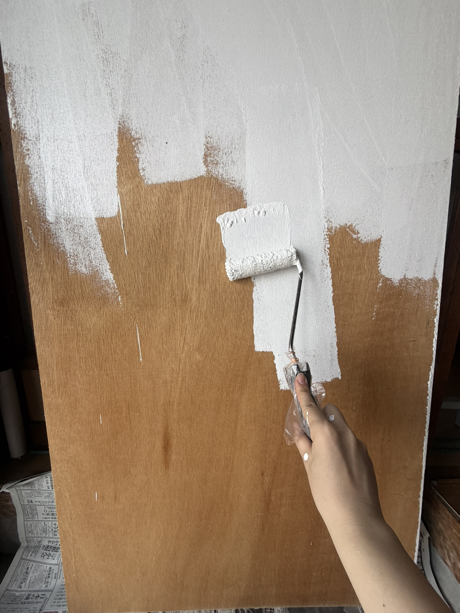

DIY day
2026-04-07
実は昨年から実行していた長男部屋の作業
元々季節ものを収納していた部屋を着々と部屋化して行っています
彼はPCやゲームをする時間があるので、部屋の防音対策をしています
もとに壁に梁や枠を作って、カネライトフォームを入れ
蓋をし、メインの壁にのみ彼が選んだ壁紙を貼って…
今週は背面にあたる壁に棚を付けるため下地造りをしていました
そして前職で手に入れていた塗装の知識と道具でぬりぬりぬりぬり...

た、楽しい。とにかく楽しい。笑今までが目に見えないところの作業メインだったので目に見えて進む作業は楽しいですね。
完璧に乾くまで作業はお預けですが完成が近くなってきて楽しみです
スウェットが一枚ダメになったことはこの際なかったことにしましょう。笑

本文続き